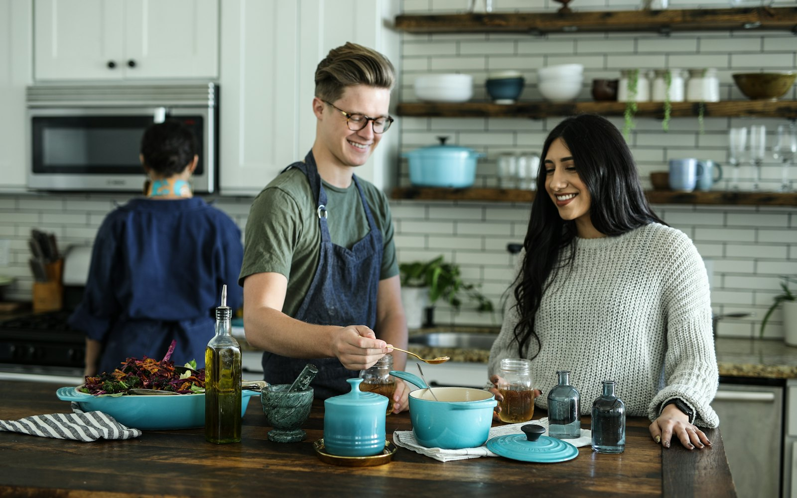
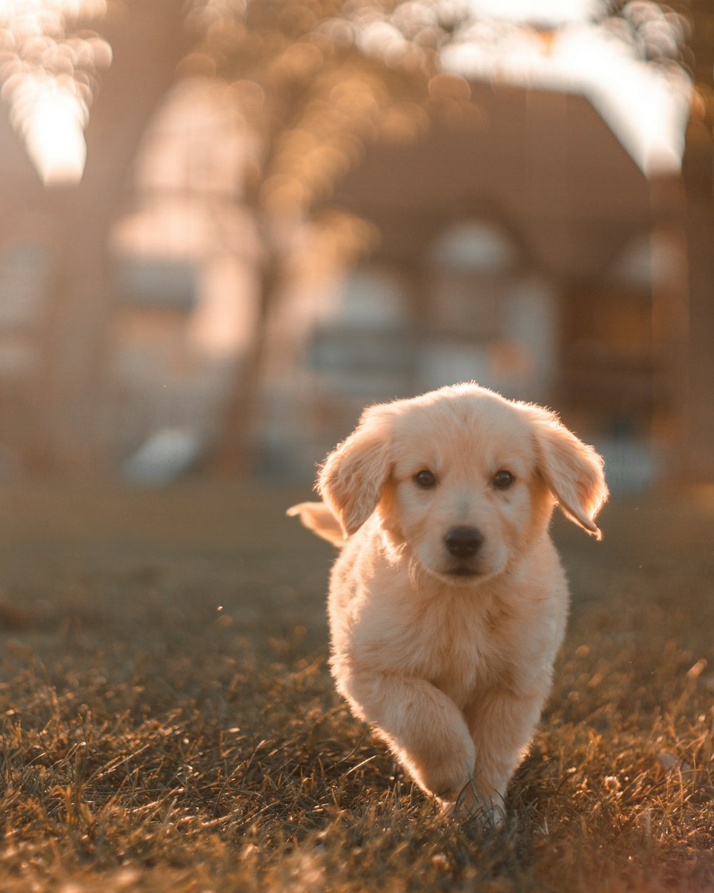
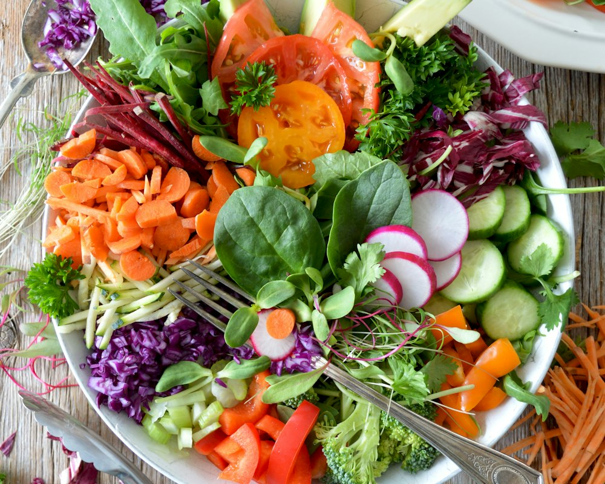

About Omakagae
한 그릇을 설계하는
작은 주방의 이야기
오마카개는 대구 수성구의 작은 주방에서 시작했습니다. 오늘 가장 좋은 재료로, 아이 한 마리를 위한 한 그릇을 만든다는 단순한 약속을 매일 지키고 있습니다.

Brand Identity
‘맡긴다’는 말에 담은 책임
일본어 ‘오마카세(お任せ)’는 “당신에게 맡깁니다”라는 뜻입니다. 손님이 셰프를 믿고 메뉴를 맡기듯, 보호자가 믿고 맡길 수 있는 한 그릇을 만들겠다는 다짐을 이름에 담았습니다.
-
Crafted
정성
대량 생산 대신 주문량만큼 매주 나눠 조리합니다. 손이 많이 가는 방식이 곧 우리의 품질 기준입니다.
-
Tailored
맞춤
체급, 나이, 건강 상태, 입맛까지. 같은 사료를 모두에게 주지 않고 아이마다 다른 코스를 설계합니다.
-
Honest
정직
모든 제품의 원료와 100g당 영양성분을 공개합니다. 보호자가 직접 확인할 수 있어야 믿고 맡길 수 있으니까요.

Founding Philosophy
“이 사료, 정말
우리 아이에게 맞을까?”
오마카개는 이 질문에서 시작했습니다. 성분표를 아무리 읽어도 우리 아이에게 하루 몇 g이 필요한지, 어떤 재료가 맞는지 알기 어려웠습니다. 그래서 직접 계산하고, 직접 만들기로 했습니다.
사람이 먹는 등급의 재료를 고르고, 체중과 열량을 기준으로 정량을 설계하고, 한 번에 조금씩 만들어 신선하게 보내는 것. 그 당연한 과정을 타협 없이 지키는 것이 오마카개의 설립 이념입니다.
오마카개 대표 김기대
-
01
재료에 정직하게
국내산 육류와 제철 채소를 주재료로, 인공 향미료 · 착색료 · 소금을 넣지 않습니다.
-
02
한 마리를 위해 설계하게
RER 공식으로 하루 권장 열량을 계산하고, 건강 상태에 따라 열량과 토핑을 조절합니다.
-
03
근거를 바탕으로
최신 연구와 공식 영양 기준을 꾸준히 살피고, 그 내용을 애견 정보 저널로 보호자와 나눕니다.
Vision & Mission
모든 반려견이
‘나만을 위한 한 끼’를 먹는 내일.
Mission 체급과 건강 상태에 맞춘 정량 수제식을 매달 문 앞까지 보내, 보호자가 계산하고 고민하던 시간을 아이와 함께하는 시간으로 돌려드립니다.
-
Care
아이 중심
모든 결정은 “아이에게 좋은가”라는 질문에서 출발합니다.
-
Craft
장인의 손
작은 배치, 저온 조리, 개별 포장으로 신선함을 지킵니다.
-
Clarity
투명한 정보
원료, 영양성분, 가격 계산 방식을 모두 공개합니다.
-
Community
함께 성장
지역 농가 · 수의 전문가와 함께 더 나은 한 그릇을 만듭니다.
2030 Goals
- 3,000구독 가구
- 전국냉장 당일 출고 배송망
- 1곳반려견 영양 연구 랩 설립
- 100%국내산 주원료 유지
Logo & Identity System
셰프 모자를 쓴 강아지
오마카개의 심볼은 정성껏 요리하는 셰프와, 그 요리를 기다리는 강아지를 하나의 얼굴로 담았습니다.
-
셰프 모자
오늘의 재료를 고르고 직접 조리하는 셰프의 책임감. ‘맡기다’라는 브랜드 약속을 상징합니다.
-
늘어진 두 귀
체급과 견종을 가리지 않는 모든 반려견. 카멜 톤으로 따뜻하고 친근한 인상을 줍니다.
-
원형 엠블럼
위에서 내려다본 한 그릇이자, 매달 돌아오는 구독의 순환을 뜻합니다.
-
작은 미소
한 그릇을 비운 뒤의 만족감. 오마카개가 지향하는 가장 중요한 결과입니다.
Color Palette
-
Espresso
#3A2A1F -
Camel
#C49A6C -
Camel Deep
#A77B4D -
Burgundy
#7E2A2A -
Sand
#F2E7D7 -
Cream
#FBF6EE
Typography
- 오마카개 한 그릇 Gowun Batang · 제목
- Today's Omakase Cormorant Garamond · 영문 포인트
- 하루 권장 열량 374kcal Noto Sans KR · 본문 · 정보
Heritage Check
카멜 바탕에 에스프레소 · 버건디 라인을 교차한 체크 패턴은 오래 입어도 질리지 않는 클래식처럼, 오래 함께할 브랜드를 뜻합니다.
History
오마카개가 걸어온 길
작은 질문 하나가 한 그릇이 되고, 한 그릇이 매달 찾아가는 구독이 되기까지.

-
2025
-
창업 준비 · 레시피 연구 시작
체급별 하루 권장 열량을 기준으로 수제 사료 레시피 개발
-
시험 조리 및 급여 테스트
소형 · 중형 · 대형 체급별 시제품 조리와 기호성 테스트
-
브랜드 ‘오마카개’ 아이덴티티 확정
셰프 모자 강아지 심볼과 헤리티지 체크 패턴 디자인
-
창업 준비 · 레시피 연구 시작
-
2026
-
오마카개 설립
대구광역시 수성구 상록로 15 · 이용약관 및 서비스 정책 시행
-
수성구 주방 오픈 · 시그니처 건식 사료 출시
닭고기 · 현미 · 귀리를 저온으로 구운 기본 사료
-
체급별 맞춤 정기 구독 시작
토핑 9종 · 간식 3종을 고르는 월 1회 30일분 배송
-
건강 체크 기반 맞춤 설계 도입
질환 · 노령에 따른 열량 조절과 추천 · 주의 토핑 안내
-
습식 화식 라인 출시 · 애견 정보 저널 오픈
수비드 화식 1회분 진공 포장, 연구 기반 반려견 소식 연재
-
오마카개 설립
-
2027
-
전국 냉장 배송 확대
수도권 · 부산 · 광주 거점 냉장 물류 연계
-
전국 냉장 배송 확대
Company Profile
오마카개 회사 개요
오마카개를 한눈에 이해할 수 있도록 기본 정보를 정리했습니다.
- 회사명
- 오마카개 (OMAKAGAE)
- 대표
- 김기대
- 설립
- 2026년 1월
- 소재지
- 대구광역시 수성구 상록로 15
- 사업 분야
- 반려견 맞춤 수제 사료 · 간식 정기구독
- 주요 제품
- 시그니처 건식 사료, 수비드 습식 화식, 토핑 9종, 수제 간식 3종
- 구독 요금
- 월 49,000원(소형견) · 109,000원(중형견) · 179,000원(대형견)부터
- 배송
- 월 1회 30일분 냉장 택배 배송
- 연락처
- 010-4526-6868
Your Omakase